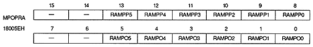
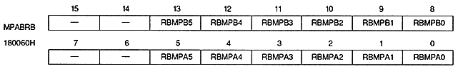
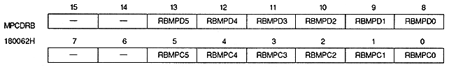
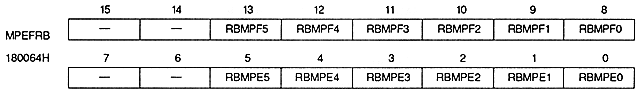
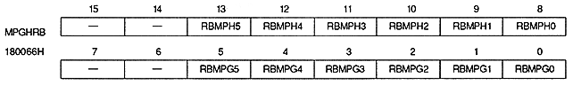
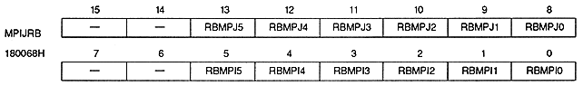
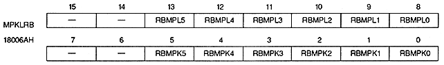

Return to previous page ｜ Return to menu ｜ Go to next page
Map (Rotation parameter A, Plane O, P)

Map (Rotation parameter B, Plane A, B)

Map (Rotation parameter B, Plane C, D)

Map (Rotation parameter B, Plane E, F)

Map (Rotation parameter B, Plane G, H)

Map (Rotation parameter B, Plane I, J)

Map (Rotation parameter B, Plane K, L)

Return to previous page ｜ Return to menu ｜ Go to next page